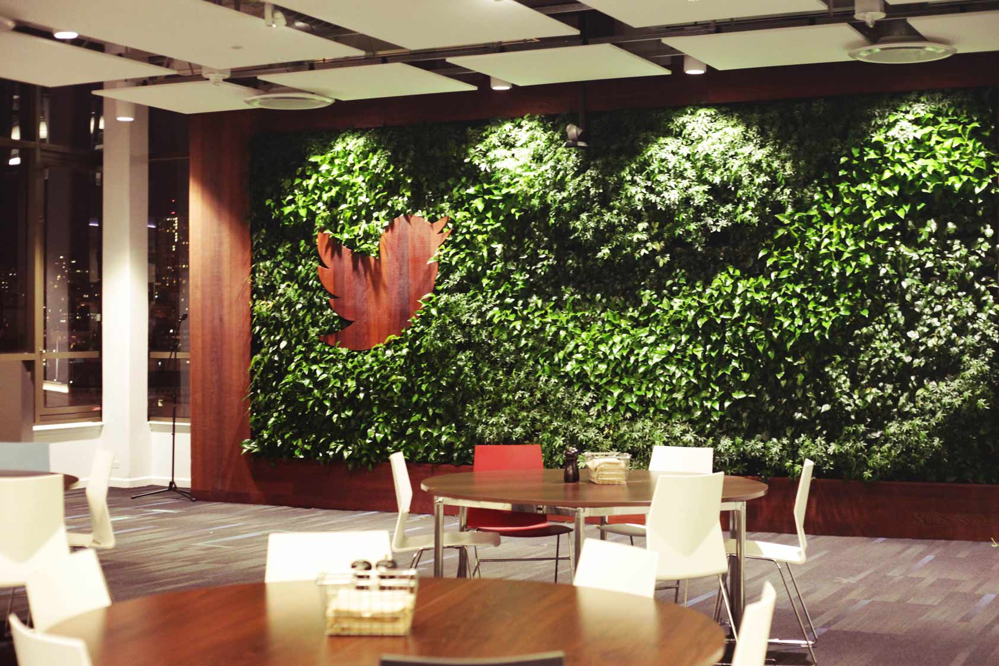
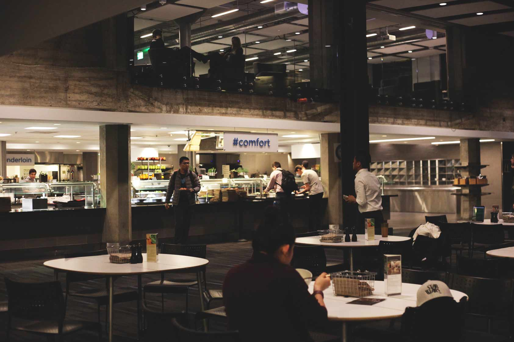
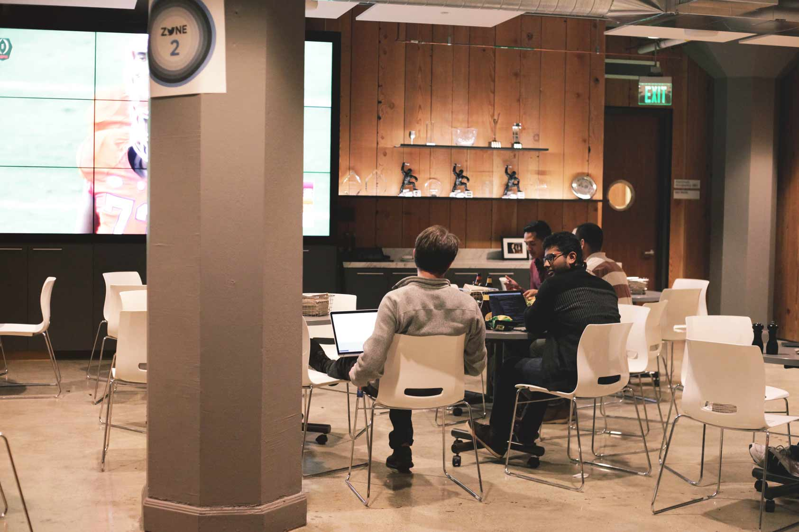

지금 이 순간 일어나고 있는 일들에 대해 신속히 알려주는 소셜네트워크서비스, 트위터(Twitter). 트위터를 통해 바야흐로 전세계 사람들이 서로 더욱 끈끈하게 연결될 수 있게 되었다. 공간 431팀은 이 트위터에서 소프트웨어 엔지니어로 근무하고 있는 김현덕(서울대 컴퓨터공학 졸) 선배님을 만나, 실리콘밸리에서 일하는 소프트웨어 엔지니어의 삶에 관한 유쾌한 이야기를 들어보았다.
IT산업의 메카와도 같은 곳에서 소프트웨어 엔지니어로 일하고 계신데요! 원래 학부생 때부터 프로그래밍을 잘 하신 편이셨나요?
전 그냥 평범한 학생이었던 것 같아요. 원래 프로그래밍 쪽은 어렸을 때부터 해왔던 친구들이 꽤 있잖아요. 그 친구들과 비교하면 전 보통 정도 수준이었어요. 프로그래밍도 프로그래밍이지만, 저는 한 때 벤처에 관심을 가졌어요. 그래서 경영학을 복수로 전공하게 되었고요. 미국에 computer science 석사를 하러 와서 데이터 마이닝을 중심으로 공부하게 된 이유도 벤처나 기업에서 이 분야를 유용하게 쓸 수 있을 것 같다는 생각에서 였어요. 지금은 빅데이터 분석, 텍스트 마이닝 이런 것들이 굉장히 핫한 분야이지만 그 때는 인기가 있는 쪽은 아니었죠. 사실 트위터가 정말 거대한 real time text data를 보유하고 있잖아요. 그걸 분석해보고 싶어서 트위터로 오게되었어요. 유명 IT 기업에서 일을 하게 된 것은 코딩을 무진장 잘해서라기 보다는, 인터뷰 당시 제 전공과 관련해서 기업에 도움이 될 만한 사업 아이디어를 많이 냈기 때문인 것 같아요. 지금도 회사에서 직접적인 코딩 보다는 알고리즘이나 모델을 만드는 일을 주력으로 하고 있고요.
그렇군요! 혹시 학부생 때부터 해외 취업을 생각하고 계셨던 건가요?
아, 아니에요! 전 그저 공부를 하고 싶어서 미국으로 오게 되었어요. 원래는 교수를 생각했었죠. 그런데 미국에 와보니까, IT와 관련한 가장 신기술은 모두 Industry 차원에서 진행이 되고 있더라구요. 학교에서 아무리 이론을 들고 논문을 써봤자, 실리콘밸리의 기업들은 이미 방대한 real time 데이터를 활용해서 이론을 실제로 서비스에 적용시키고 있었던 거에요. 유명 대학의 교수들도 보면, 연구 년을 활용해서 기업에서 일을 하고 있더라고요. 또 스탠포드 같은 경우는 원래 소프트웨어 분야가 강한 학교였지만, 머신러닝(machine learning)을 가르치던 교수들이 industry로 많이 빠져서 오히려 학교 역량이 약해졌다는 평가를 받고 있는 실정이죠. 이런 상황들을 보고 저도 기업에서 일을 해야겠다는 생각이 들었어요.
트위터, 혹은 미국에서 일한다는 것의 장점은 무엇이라고 생각하시나요?
음… 다양한 장점이 있어요. 우선 싱글 엔지니어를 위해서 회사 차원에서 언제나 건강하고 맛있는 먹거리를 제공하고 있고요 (웃음). 저에겐 굉장히 중요한 일이에요. 또 재택근무도 가능하죠. 회사 트위터의 장점 중 하나는 다양성에 굉장히 많은 관심을 갖고 있다는 점이에요. 남녀, 인종 뿐만 아니라 성소수자에 대한 배려도 놓치지 않아요. 회사 내에 성소수자들의 모임이 있고요. 샌프란시스코에서는 매년 성소수자들의 퍼레이드가 있는데, 트위터가 후원하고 있어요. 또, 헌혈을 하지 못하는 성소수자들을 위해서 회사 차원에서 헌혈을 권장한다거나 하는 일이 없어요. 배제될 수 있는 사람들을 배려한 거죠.
역시 글로벌 기업답네요! 혹시 일하면서 스트레스를 받는 일은 없으신가요?
한국과 비교해서 직원들 간의 수평적 관계가 형성이 되어 있다는 것은 굉장한 강점이에요. 하지만 한편으로 저희는 끊임없이 성과와 관련해서 평가를 받고 있어요. 팀원들 역시 꾸준히 서로 피드백을 하고요. 성과를 내지 못하면 언제든지 해고당할 수 있다는 점이 스트레스라면 스트레스겠죠. 그래서 항상 열심히 일을 해야해요. 하지만 이게 언제나 스트레스인 건 아닌게, 성과를 내면 그만큼 또 인정을 받을 수 있거든요. 월급도 오르고. 다행히 저는 함께 일하는 팀원들 역시 좋아요. 회사의 다른 사람들과 이야기해보면 팀원에 대해서 불만을 갖고 있는 사람들이 꽤 있거든요. 예를 들어서 커뮤니케이션이 잘 안된다거나, 매니저가 허드렛일만 준다거나. 하지만 저는 그런 일을 겪지 않아서 다행인 것 같아요.
선배님처럼 프로그래밍을 잘 하는 방법에는 어떤 게 있을까요?
하하 글쎄요. 아무래도 많이 해보는 게 가장 좋겠죠. 다른 친구들을 보면 사이드 프로젝트를 많이 하는 경우가 있더라고요. 저는 학교 수업 과제를 열심히 했었던 것 같아요. 나름대로 했던 거라면, 논문을 쓸 때 항상 데모를 만들었다는 거에요. 논문을 발표할 때 단순히 페이퍼에 설명을 하는 것보다, 직접 코딩을 해서 데모를 만들면 사람들에게 훨씬 더 잘 이해시킬 수 있을 뿐만 아니라 취업할 때도 잘 어필할 수 있는 것 같아요. 제가 일하고 있는 분야에서는 주로 JAVA언어를 쓰는데, 아무래도 아직까지는 JAVA나 C언어 같은 메인 랭귀지를 잘 하는 게 큰 도움이 되요. 복잡한 시스템이나 스피드가 필요한 시스템의 경우는 이런 메인 랭귀지를 이용해서 구축할 수 밖에 없거든요. 대신 여기에 루비나 파이썬 같은 언어도 함께 공부해 둔다면 당연히 더욱 좋겠죠.
마지막으로, 앞으로의 꿈이 어떻게 되시는지 궁금합니다.
사실 예전보다는 일이 좀 지루해진 것 같아요. 2년 반 정도 계속 같은 팀에만 있었거든요. 이런 부분은 매니저랑 잘 얘기를 해보아야겠죠. 조금 더 재미있는 일을 받거나 조금 더 큰 규모의 프로젝트에 도전할 수 있으니까요. 나중에 스타트업을 할 기회가 온다거나, 아니면 한국에서 좋은 교수직에 제안이 온다거나, 그러면 그 때 상황에 봐서 유동적으로 움직이게 될 것 같아요. 당장은 엔지니어링 일을 하겠지만, 나중에는 작은 규모에서 매니저 일을 해보고 싶어요. 사람들을 다루는 게 쉬운 일은 아니겠죠. 작은 단위에서 사람들과 소통하며 저에게 이 분야와 관련해서 어떤 가능성이 있는지 보고 싶어요. 앞으로의 꿈이라면, 저는 직업을 목표로 두기 보다는 항상 행복하게 살고 싶어요 (웃음)
좋은 말씀 정말 감사드립니다. 저희 때문에 회사에 늦게 까지 계시게 해서 죄송해요. 긍정적이고 진취적으로 사시는 모습에서 많은 걸 배우게 되었어요!
아니에요. 저도 여러분들 만나서 즐거웠습니다! 아직 다들 어리시잖아요! 하고 싶은 일이 있다면 언제든지 도전해보세요!